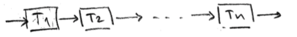
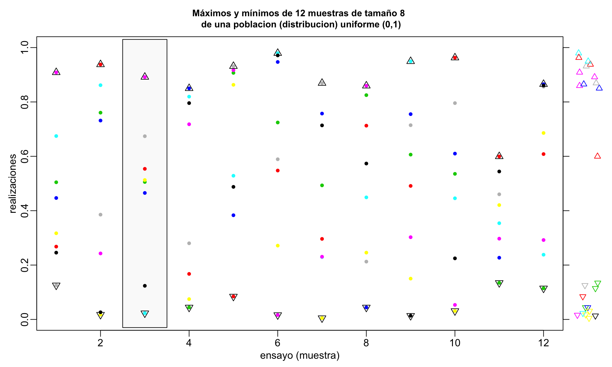
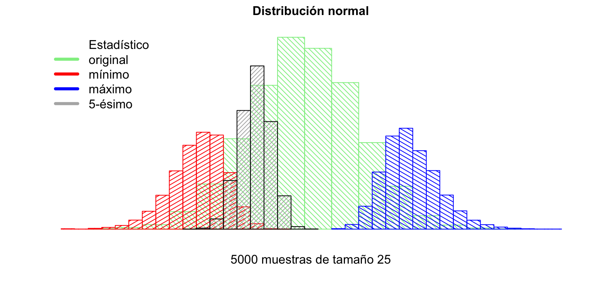

1 Estadísticos de Orden
1.1 Definiciones
En estadística, uno se refiere a una muestra aleatoria de tamaño \(n\) de una población \(\texttt{X}\) con función de densidad de probabilidad (fdp) \(f\), a una colección \(x_1, \ldots, x_n\) de variables aleatorias independientes e identicamente distribuidos con fdp común \(f\). Así, \(\underline{\mathbf{x}} = (x_1, \ldots, x_n) \; \text{m.a. de }\;x \sim f.\)
Un estadístico es una función de la m.a. que no depende de parámetros desconocidos. Por ejemplo, sea \(\underline{\mathbf{x}} = (x_1, \ldots, x_n) \; \text{m.a.}\), \(\overline{\mathbf{x}} = \frac{1}{n} \sum_1^n x_i\); \(\mathbf{s^2} = \sum_1^n (x_i - \overline{\mathbf{x}})^2\); \(\mathbf{x}_m = \texttt{min}\{x_1, \ldots, x_n\}\); \(\tilde{\mathbf{x}} = \texttt{mediana}\{x_1, \ldots, x_n\}\); \(\mathbf{x}_M = \texttt{max}\{x_1, \ldots, x_n\}\). Por otro lado, \(\sum_1^n(x_i - \mu)^2\) no es un estadístico pues depende de \(\mu\), parámetro desconocido.
Sea \(\underline{\mathbf{x}} = (x_1, \ldots, x_n)\) m.a. de \(x \sim f\), las \(x_1, \ldots, x_n\) son \(\texttt{vaiid}\). Se definen los estadísticos de orden de la m.a. \(\mathbf{x}\) por: \(x_{(1)}, \ldots, x_{(n)}\), tales que, para todo \(\omega \; \epsilon \; \Omega\) \(x_{(1)}(\omega) \leq x_{(2)}(\omega) \leq\ldots \leq x_{(n)(\omega)}\). Si \({Y_i} = x_{(i)} \; i = 1, \ldots, n\), entonces, para todo \(\omega \; \epsilon \; \Omega\)
\[ \begin{array}{ccl} {Y_1}(\omega) & = & \texttt{min}\{x_1(\omega), \ldots, x_2(\omega)\}\\ {Y_2}(\omega) & = & \text{la segunda realización} \; x_i(\omega) \; \text{más pequeña}\\ \vdots && \\ {Y_r}(\omega) & = & \text{es tal que} \; Y_i(\omega) \leq \ldots \leq Y_{r-1}(\omega) \leq Y_{r}(\omega) \leq \ldots \leq Y_{n}(\omega) \\ \vdots && \\ {Y_1}(\omega) & = & \texttt{max}\{x_1(\omega), \ldots, x_2(\omega)\}\\ \end{array} \]
\[ \begin{array}{ccl} {x_{(1)}} & = & \text{primer estadístico de orden}\\ \vdots & & \\ {x_{(r)}} & = & \text{r-ésimo estadístico de orden}. \end{array} \]
Se define el rando de una m.a. \(\underline{\mathbf{x}}\) como
\[ R = x_{(n)} - x_{(1)} = \texttt{max}\{x_i\}-\texttt{min}\{x_i\} \]
Consideraremos v.a. continuas, de tal manera que con probabilidad 1 no se tienen empates, luego,
\[ x_{(1)} < x_{(2)} < \ldots x_{(n)}. \]
1.2 Ejemplos
1.2.1 Mecanismo de componentes
Ej: Considere un mecanismo con \(n\) componentes idénticos e independientes con tiempos de vida \(T_1, \ldots, T_n\).
- Si los componentes están conectadas en serie,
 Entonces, \(T_{(1)} = \texttt{min}\{T_1, \ldots, T_n\}\) es el tiempo de operación del mecanismo.
- Si los componentes están conectadas en paralelo,
 Entonces, \(T_{(n)} = \texttt{max}\{T_1, \ldots, T_n\}\) sería el tiempo de operación del mecanismo.
Entonces, \(T_{(n)} = \texttt{max}\{T_1, \ldots, T_n\}\) sería el tiempo de operación del mecanismo.
1.2.2 Línea de producción de partes
Ej: Suponga una línea de producción de partes (tornillos) supuestamente idénticos. Sean \(x_1, \ldots, x_n\) las longitudes de los tornillos. Si \(x_{(1)}\) y \(x_{(n)}\) están dentro de tolerancia, todos los tornillos.
Note que \(R = \texttt{max}\{x_i\} - \texttt{min}\{x_i\} = x_{(n)}- x_{(1)}\) es una medida de la variación (variabilidad de la producción).
1.2.3 Máximos y mínimos de 12 muestras de distribución \(\texttt{Unif} (0,1)\)
N <- 12
n <- 8
k <- 3
col <- seq(2,n+1)
x <- matrix(NA,nrow=N,ncol=n,dimnames=list(seq(N),paste("x",seq(n),sep="")))
xmin <- rep(NA,N)
xmax <- rep(NA,N)
idxm <- rep(NA,N)
idxM <- rep(NA,N)
for(i in seq(N)) {
x[i,] <- runif(n)
xmin[i] <- min(x[i,])
idxm[i] <- which.min(x[i,])
xmax[i] <- max(x[i,])
idxM[i] <- which.max(x[i,])
}
lab <- paste("Máximos y mínimos de",N,"muestras de tamaño",n,
"\n de una poblacion (distribucion) uniforme (0,1)")
# cat(paste(lab,"\n"))
tab <- t(round(x <- cbind(x,xmin=xmin,xmax=xmax,rango=xmax-xmin),3))
opar <- par(no.readonly=TRUE)
par(mfrow=c(1,1),mgp=c(1.5,.5,0),mar=c(3,3,3,4),oma=0*c(1,1,1,1),pty="m")
ylim <- c(0,1) # range(xmin,xmax)
plot(0,0,xlim=c(1,N),ylim=ylim,type="n",
xlab="ensayo (muestra)",ylab="realizaciones",
main=lab,cex.main=0.9)
rect(k-0.5,-0.03,k+0.5,1.03,col=grey(.98),border=1)
for(i in seq(N)) {
points(rep(i,n),x[i,seq(n)],pch=20,col=col)
points(rep(i,2),c(xmin[i],xmax[i]),pch=c(25,24),col=1,cex=1.25)
}
axis(4,labels=FALSE)
points(jitter(rep(N+1,N)),xmin,col=col[idxm],pch=25,xpd=NA,)
points(jitter(rep(N+1,N)),xmax,col=col[idxM],pch=24,xpd=NA)
Las observaciones de cada muestra se muestran a continuación:
1.2.4 Muestras de distribución \(\texttt{Gamma} (\alpha = 1, \beta = 1)\)
ev <- function (x) return(eval(parse(text = x)))
N <- 2000 # Numero de simulaciones
n <- m <- 21 # taman~o de muestra
k <- 5 # estadistico de orden desead
if(k < 1 | k > n) stop("\n*Estadístico de orden fuera de rango!")
x <- rep(NA,N)
# Leyes de Probabilidad
# 1 = binomial
# 2 = poisson
# 3 = uniforme
# 4 = normal
# 5 = gamma
ley <- 5
ley <- ifelse(ley == c(1,2,3,4,5),1,0)
if(ley[5]) {
LeyProb <- "Distribución Gamma"
alpha <- 1
beta <- 1
mx=2
mtitle <- substitute("parámetros: "*Alpha*"="*alpha*", "*Beta*" ="*beta,
list(Alpha=quote(alpha),alpha=alpha,Beta=quote(beta),beta=beta))
leyProb <- "rgamma(n,alpha,beta)"
for(i in seq(N)) x[i] <- sort(ev(leyProb))[k]
}
opar <- par(no.readonly=TRUE)
par(mfrow=c(1,2),mar=c(4,4,2,1),mgp=c(2,.5,0),oma=c(2,0,2,0),pty="s",
cex=1,cex.axis=0.8,las=1)
n <- N
xlab <- "x"
mlab <- paste("distribución poblacional")
y <- ev(leyProb)
xlim <- range(y)
hist(y,probability=TRUE,xlim=xlim,
border="white",col="bisque",
xlab=xlab,ylab="densidad",main=mlab,cex.main=0.8)
if(which(ley==1)>2) lines(density(y),xlim=xlim,lwd=2,col="coral4")
points(y <- sample(y,m),rep(0,m), pch=20, cex=1)
points(sort(y)[k],0, pch=20, cex=1, col=2)
xlab <- expression(x[(k)])
mlab <- paste("k=",k," estadístico de orden",sep="")
hist(x,probability=TRUE,xlim=xlim,
border="white",col="burlywood4",
xlab=xlab,ylab="densidad",main=mlab,cex.main=0.8)
if(which(ley==1)>2) lines(density(x),xlim=xlim,lwd=2,col="coral4")
title(LeyProb,line=1,outer=TRUE)
title(mtitle,cex.main=0.9,line=0,outer=TRUE)
title(paste("Número de muestras simuladas:",N),cex.main=0.9,line=-2,outer=TRUE)
title(paste("Tamaño de muestra:",m),cex.main=0.8,line=-3,outer=TRUE)1.2.5 Muestras de distribución \(\texttt{Normal}(\mu, \sigma)\)
N <- 5000
n <- 25
k <- 5
mu <- 10
sigma <- 2
xm <- rep(NA, N)
xM <- rep(NA, N)
xq <- rep(NA, N)
X <- matrix(NA,nrow=N, ncol=n)
for(i in seq(N)) {
x <- rnorm(n, mean=mu, sd=sigma)
xm[i] <- min(x)
xM[i] <- max(x)
xq[i] <- sort(x)[k]
X[i,] <- x
}
xlim <- range(X)
opar <- par(no.readonly=TRUE)
par(mfrow=c(1,1), mgp=c(1.5,.5,0), mar=c(4,3,2,1), oma=c(0,0,0,0), pty="m", las=1,
cex=1.00, cex.lab=0.9, cex.main=1.0, cex.axis=0.9)
col.null <- "lightgreen"
col.m <- "red"
col.M <- "blue"
col.k <- grey(.7)
X <- rnorm(2*N, mean=mu, sd=sigma)
tt0 <- hist(X, plot=FALSE)
plot(tt0, xlim=xlim, axes=FALSE, xlab="", ylab="", main="",
col=col.null, border=col.null, density=20, angle=-45)
tt <- hist(xm, plot=FALSE)
plot(tt, add=TRUE, col=col.m, border=col.m, density=20, angle=30)
tt <- hist(xM, plot=FALSE)
plot(tt, add=TRUE, col=col.M, border=col.M, density=20, angle=-30)
tt <- hist(xq, plot=FALSE)
plot(tt, add=TRUE, col=col.k, density=25, angle=45)
qlab <- paste(k,"-ésimo",sep="")
lab <- c("Estadístico", "original", "mínimo", "máximo", qlab)
legend("topleft", col=c(0, col.null, col.m, col.M, col.k), lwd=4, legend=lab, bty="n")
lab <- paste(N,"muestras de tamaño", n)
title("Distribución normal", sub=lab, line=1)
1.3 Función de densidad
Sea \(\underline{\mathbf{x}} = (x_1, \ldots, x_2)\) m.a. de \(X\) con fpa \(F\) y fdp \(f\).
Sea \(x \epsilon \mathbb{R}\), la probabilidad de que exactamente \(r\) de los \(x_i\)’s hayan caido en \((-\infty, x]\) y \((n-r)\) en \((x, \infty)\) es
\[
{n\choose r} F(x)^r \big[1 - F(x)\big]^{n-r}
\]
gráficamente,

El evento \(\{X_{(r)} \leq x\}\) ocurre si y solo si \(r\) o más de los \(x_i\)’s caen en \((-\infty, x]\). Entonces, si \(F_r \equiv F_{x_{(r)}}\),
\[ F_r (x) = P(X_{(r)} \leq x) = \sum_{k=r}^n {n\choose k} F(x)^k \big[1-F(x)\big]^{n-k} \quad x\; \epsilon \;\mathbb{R}. \]
Por ejemplo: \[ \begin{array}{ccl} F_n(x) & = & F(x)^n\\ F_1(x) & = & 1- \big(1-F(x)\big)^n \end{array} \]
Alternativamente,
\[ \begin{array}{ccccl} F_n(x) & = & P\big( x_{(n)} \leq x \big) & = & P\big( \texttt{max}\{x_i\} \leq x\big) \\ & & & = & P\big( x_1 \leq x, \ldots, x_n \leq x \big) \\ & & & \stackrel{\mbox{ind}}{=} & P\big( x_1 \leq x \big) \cdots P\big( x_n \leq x \big) \\ & & & = & F(x)^n \\ & & & & \\ F_1(x) & = & P\big( x_{(1)} \leq x \big) & = & 1- P\big( x_{(1)} \geq x\big) \\ & & & = & 1-P\big( \texttt{min}\{x_i\} \geq x\big) \\ & & & = & 1 - P\big( x_1 \geq x, \ldots, x_n \geq x \big) \\ & & & \stackrel{\mbox{ind}}{=} & 1- \Big[P\big( X \geq x \big)\Big]^n \\ & & & \stackrel{\mbox{ind}}{=} & 1- \Big[ 1 - F(x)\Big]^n \end{array} \]
Las correspondientes fdp:
\[ \begin{array}{ccccl} f_n(x) & = & \frac{\mathfrak{d}}{ \mathfrak{d}x }F_n(x) & = & n\big[ F(x) \big]^{n-1}f(x)\\ f_1(x) & = & \frac{\mathfrak{d}}{ \mathfrak{d}x }F_1(x) & = & n\big[ 1- F(x)\big]^{n-1}f(x) \\ \end{array} \] donde \(\quad x \epsilon \mathbb{R}\).
Y para \(1 \leq r \leq n\), se tiene
- HP & S (1971)
\[ f_r(x) = \frac{\mathfrak{d}}{ \mathfrak{d}x }F_r(x) = \sum_{k =r}^n {n \choose k} \Big\{ k \; F(x)^{k-1} \big[ 1 - F(x)\big]^{n-k}f(x) - (n-k)f(x)F(x)^k \big[ 1 - F(x)\big]^{n-k-1} \Big\} \] con un poco de manipulación algebraíca, acomodando índices \[ f_r(x) = n {n-1 \choose r-1} f(x) F(x)^{r-1} \big[ 1 - F(x)\big]^{n-r} \quad ,\; x \; \epsilon \; \mathbb{R} \]
- B & H (2014)

Considere \( \mathfrak{d}x \) la diferencial alrededor de \(x\) y \(f_r\) la fdp de \(X_{(r)}\). Luego \(f_r(d) \mathfrak{d}x \) es la probabilidad de que el \(r\)-ésimo estadístico de orden \(X_{(r)}\) caiga en el intervalo de longitud \( \mathfrak{d}x \) alrededor del punto \(x\). Entonces,
\[ f_r(x) \mathfrak{d}x = \underbrace{ {n-1 \choose r-1} F(x)^{r-1} }_{ \Large{ \texttt{(1)}} } \;\cdot\; \underbrace{ nf(x) \mathfrak{d}x }_{ \Large{\texttt{(2)}} } \;\cdot\; \underbrace{ \big[1 - F(x)\big]^{n-r} }_{ \Large{\texttt{(3)}} } \]
\(\large{ \texttt{(1)} }\) Se elijen los \((r-1)\) \(X_i\)’s de (n-1) posibles que caerñan a la izquierda de \(x\). \(F(x)\) es la probabilidad de caer ea la izquierda de \(x\).
\(\large{ \texttt{(2)}}\) Se elije \(X_i\) de los \(n\) posibles y \(f(x) \mathfrak{d}x \) es la probabilidad de que caiga en el intervalo \( \mathfrak{d}x \) al rededor de \(x\).
\(\large{ \texttt{(3)}}\) Es la probabilidad de que los \((n-r)\) \(X_i\)’s restantes que caigan a la derecha de \(x\).
y cancelando \( \mathfrak{d}x \) de ambos lados se tiene el resultado,
\[ f_r(x) \mathfrak{d}x = n {n-1 \choose r-1} f(x) F(x)^{r-1} \big[1 - F(x)\big]^{n-r} \;\quad\; x \; \epsilon \; \mathbb{R}. \]
Considere ahora el rango de la muestra \(R = X_{(n)} - X_{(1)}\). Para determinad la fdp de \(R\) se requiere la conjunta de \(X_{(1)}\) y \(X_{(n)}\). Para esto, sean \(x \leq y\)
\[ \begin{array}{ccl} P(X_{(1)} > x, X_{(n)} \leq y) & = & P(x < X_{1} \leq y, \ldots, x < X_{n} \leq y) \\ & \stackrel{\mbox{ind}}{=} & \big[ P(x < X \leq y ) \big]^n \\ & = & \big[ F(y) - F(x) \big]^n \\ \end{array} \]

Luego,
\[ \begin{array}{ccl} F_{1,n}(x,y) & = & P(X_{(1)} \leq x, X_{n} \leq y) \\ & = & P \big(X_{n} \leq y\big) - P \big(X_{(1)} \geq x, X_{n} \leq y \big) \\ & = & \big[F(x)\big]^n - \big[F(y)-F(x)\big]^n \\ \end{array} \]
Donde,
\[ f_{1,n}(x,y) = \frac{\mathfrak{d}^2 F_{1,n}(x,y)}{\mathfrak{d}x\mathfrak{d}y} = n(n-1)f(x)f(y)\big[F(y) - F(x)\big]^{n-2} \]
Entonces, para \(r>0\)
\[ f_{\small{R} }(r) = \int_{\mathbb{R}} f_{1,n} (u, u+r) \mathfrak{d} u = n(n-1)\int_{-\infty}^{\infty} f(u) f(u+r) \big[ F(r+u) - F(u)\big]^{n-2} \mathfrak{d} u \]
1.4 Función de densidad conjunta de los estadísticos de orden
Sea \(\underline{\mathbf{x}} = (x_1, \ldots, x_n)\) m.a. de \(X \sim f\). Entonces, la fdp conjunta de \(\underline{\mathbf{x}}\) es
\[ f_{\underline{\mathbf{\small{X}}} } (x) = \prod_{1 = 1}^n f(x_i) \quad\; \text{por independencia} \]
Sea \(Y_i = X_{(i)}\) el i-ésimo estadístico de orden, donde \(i = 1, \ldots, n\). Entonces \(\underline{\mathbf{X}} \rightarrow \underline{\mathbf{Y}}\) es una mera permutación de las entradas de \(\underline{\mathbf{X}}\).
Por ejemplo, si \( \underline{\mathbf{\small{X}}} = (X_1, X_2, X_3)\)
Para la permutación particular \(\underline{\mathbf{X}} \rightarrow \underline{\mathbf{Y}} = (X_2 < X_1 > X_3)\), se tiene la transformación